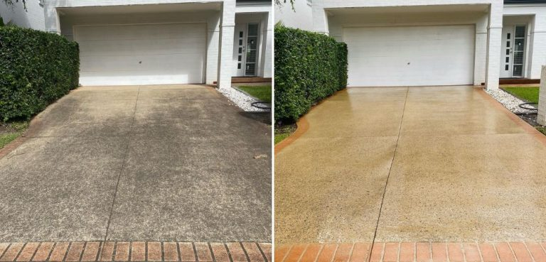
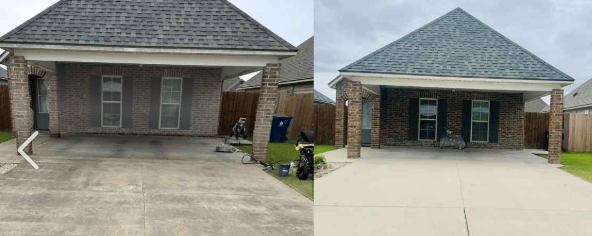
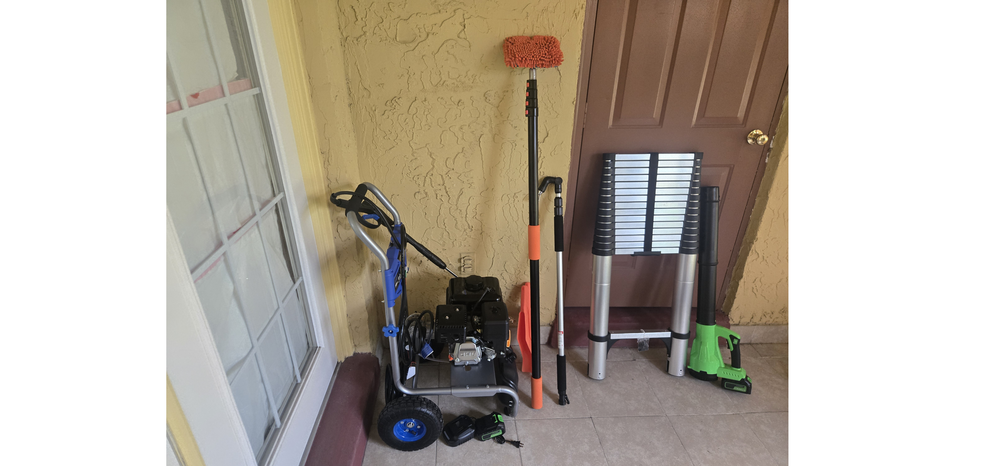

Pressure Washing in Jacksonville, FL
Professional driveway, sidewalk, patio, and pool deck pressure washing. Remove algae, dirt, tire marks, and Florida humidity buildup with safe, effective cleaning.
Professional Pressure Washing for Jacksonville Homes
Our pressure washing service restores the look of your concrete surfaces by removing algae, mildew, dirt, tire marks, and stains caused by Florida’s humidity and weather. We clean driveways, sidewalks, patios, pool decks, and more using commercial-grade equipment designed for safe, effective results.

How Our Pressure Washing Process Works
We follow a proven process to ensure your concrete surfaces are cleaned thoroughly and safely.
- 1. Surface Inspection — We check for cracks, stains, algae, and problem areas.
- 2. Pre‑Treatment Application — A cleaning solution is applied to break down algae and stains.
- 3. Commercial Surface Cleaner — We use a rotating surface cleaner for even, streak‑free cleaning.
- 4. Detail Wand Cleaning — Edges, corners, and tight areas are cleaned with a pressure wand.
- 5. Rinse & Final Wash — The entire area is rinsed to remove remaining dirt and detergent.
- 6. Post‑Inspection — We verify the surface is fully cleaned and free of streaks.

Tools We Use for Pressure Washing
We use professional-grade equipment to ensure safe, effective cleaning without damaging your surfaces.
- Commercial pressure washer — High PSI/GPM for deep cleaning.
- Surface cleaner — Provides even cleaning without streaks.
- Pressure wand — For edges, corners, and detail work.
- Pre‑treatment chemicals — Break down algae, mildew, and stains.
- Post‑treatment (optional) — Helps prevent algae regrowth.
- Safety gear — Gloves, boots, and protective equipment.

Why Pressure Washing Matters in Jacksonville
Jacksonville’s humidity, shade, and rainfall create ideal conditions for algae and mildew growth on concrete surfaces. Regular pressure washing keeps your home looking clean and prevents slippery surfaces.
- Removes algae and mildew
- Eliminates tire marks and stains
- Improves curb appeal
- Prevents slippery walkways
- Extends the life of concrete surfaces
Most Jacksonville homes benefit from pressure washing every 6–12 months.
Explore Our Exterior Cleaning Services
Gutter Cleaning • Gutter Brightening • Pressure Washing • Siding Soft Wash